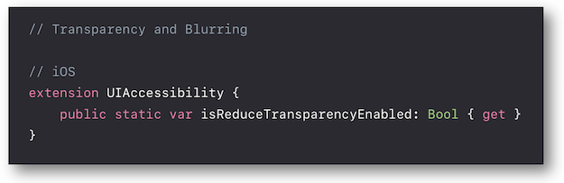
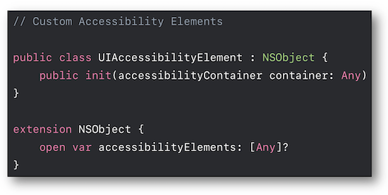
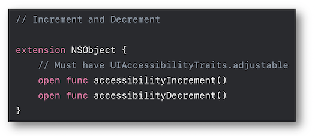

WWDC 2018 : Fournir une expérience exceptionnelle en accessibilité
Cette présentation visualisable sur le site développeur officiel d'Apple (session 230) a pour but de mettre en avant les éléments essentiels qui permettent à une application de fournir une expérience utilisateur optimale en accessibilité visuelle.

Les thèmes abordés ainsi que leur référence temporelle au sein de la vidéo sont décrits ci-dessous :
-
Floutage et transparence (03:07)
-
Contraste (04:38)
-
Grossissement (07:04)
-
Mouvement (08:48)
-
UIAccessibilityElement (21:03)
-
Les actions personnalisées (23:49)
-
Élément au premier plan (25:02)
-
Notifications (25:13)
-
-
Comment rendre un carrousel parfaitement interprétable par VoiceOver ? (25:53)
-
Comment synchroniser la mise à jour de données avec l'élément du carrousel sélectioné ? (30:53)
-
Comment associer des actions à un regroupement d'éléments ? (33:05)
-
Comment éviter la sélection d'éléments derrière une 'Modal View' ? (34:32)
-
Rendu final de l'application avec VoiceOver optimisé (35:38)
-
Le dernier thème développe un exemple d'application particulièrement intéressant pour les développeurs qui souhaitent trouver des réponses détaillées aux problèmes d'implémentation avec VoiceOver ainsi que celles et ceux qui souhaitent découvrir comment une application doit interagir avec VoiceOver pour que le parcours utilisateur soit optimal (voir 'Rendu final de l'application avec VoiceOver optimisé').
Par la suite, le fait de cliquer sur un titre permet d'ouvrir la vidéo de présentation Apple directement au moment indiqué.
Floutage et transparence (03:07) #
Depuis iOS 8, des classes telles que UIBlurEffect et UIVisualEffectView permettent de gérer parfaitement l'effet de flou d'une image.
Cependant, cela peut entraîner des difficultés occulaires pour les personnes ayant des problèmes visuels.
L'utilisateur peut alors atténuer très fortement ces effets néfastes en activant l'option d'accessibilité appropriée dans ses réglages.
Le résultat conduit à un fond d'écran beaucoup plus sombre voire uni dans certains cas.

Côté développement, il est possible de connaître la valeur de la propriété isReduceTransparencyEnabled.

Contraste (04:38) #
Le contraste {couleur du contenu exposé par rapport à la couleur du fond d'écran} est très important et repose beaucoup sur les propriétés de la police affichée détaillées dans la partie conception de ce site.
Il est possible d'augmenter nativement le contraste des couleurs en activant l'option d'accessibilité appropriée dans les réglages du terminal, pouvant ainsi favoriser un confort de lecture.
Côté développement, le suivi de la modification de ce réglage se fait grâce à la valeur de isDarkerSystemColorsEnabled.

Grossissement (07:04) #
Les quelques points concernant le Dynamic Type sont largement expliqués dans la section développement iOS et font référence à une autre présentation parfaitement détaillée dans la partie WWDC de ce site.
Le simple fait de passer une police en gras peut nettement améliorer le rendu visuel pour certains utilisateurs sans avoir à en grossir démesurément la taille.
Ici encore, les réglages du terminal permettent d'activer cette option d'accessibilité.

Côté développement, le suivi de la modification de ce réglage se fait grâce à la valeur de isBoldTextEnabled.
Mouvement (08:48) #
Certaines animations peuvent entraîner des problèmes d'équilibre voire de nausées à certaines personnes.
Les réglages utilisateurs permettent de réduire fortement tout type d'animations natives en activant l'option d'accessibilité appropriée.
Côté développement, le suivi de la modification de ce réglage se fait grâce à la valeur de isReduceMotionEnabled et permet d'adapter les effets de l'application aux souhaits de l'utilisateur s'ils ne sont pas automatiquement pris en compte.

UIAccessibilityElement (21:03) #
L'intérêt de cet élément ainsi que son implémentation sont expliqués et mis en situation au sein de l'application de démonstration.

Les valeurs continûment ajustables (21:44) #
Cette fonctionnalité implémentable par définition de trait spécifique est présentée ici de façon à fluidifier la sélection d'éléments dans une CollectionView.

Un aperçu différent de cette utilisation a déjà été développé dans une autre vidéo détaillée de la partie WWDC de ce site.
Les actions personnalisées (23:49) #
Sur une unique sélection, il est possible de regrouper un ensemble d'actions proposées sur différents éléments graphiques.

Les explications fournies ici sont aussi développées dans une autre vidéo détaillée de la partie WWDC de ce site.
Élément au premier plan (25:02) #
Lorsqu'une vue est simplement présentée comme étant "en haut" de la hiérarchie des vues, VoiceOver ne sait pas nativement qu'il ne faut pas traiter les éléments présents en fond d'écran.
La solution consiste à modifier accessibilityViewIsModal de façon à ce que VoiceOver n'analyse que les éléments de la vue mise en avant.

Une explication de l'implémentation d'une vue modale est détaillée dans la partie développeur de ce site.
Notifications (25:13) #
Petit rappel pour notifier les utilisateurs de modifications sur l'écran.

Des explications plus détaillées sur ce point sont fournies dans la partie développeur de ce site.
Exemple #
Un exemple d'application est proposé pour répondre aux questions que se posent les développeurs face aux éventuels problèmes rencontrés dans la mise en oeuvre de l'accessibilité avec VoiceOver.
La présentation de l'exemple ainsi que le rendu VoiceOver non optimisé sont absolument à visionner afin de mieux comprendre la logique des solutions apportées par tous les éléments exposés précédemment.
Comment rendre un carrousel parfaitement interprétable par VoiceOver ? (25:53) #
-
Création d'un élement accessible pour définir le carrousel. (26:11)
-
Implémentations des propriétés
labeletvalue. (26:43) -
Spécification de
adjustableTraitavec définitions deincrementetdecrement. (26:58) -
Création d'une fonction de défilement. (27:14)
-
Ajouter l'élément du carrousel en tant qu'élément sélectionnable par VoiceOver. (28:38)
-
Mise à jour de l'élément affiché en fonction de la sélection. (29:51)
-
Notification de mise à jour d'écran dès qu'un nouvel élément du carrousel est sélectionné. (30:14)
Comment synchroniser la mise à jour de données avec l'élément du carrousel sélectioné ? (30:53) #
-
Grouper des données pour améliorer significativement la sélection d'éléments. (31:14)
-
Synchronisation des données regroupées avec l'élément du carrousel sélectionné. (32:46)
Comment associer des actions à un regroupement d'éléments ? (33:05) #
Comment éviter la sélection d'éléments derrière une 'Modal View' ? #
-
Modifier
accessibilityViewIsModalenoverride. (34:33) -
Penser à notifier l'utilisateur de l'apparition d'un nouvel écran. (35:00)
Rendu final de l'application avec VoiceOver optimisé. (35:38) #
Le code présenté lors de cette vidéo ainsi que des explications sur son implémentation sont accessibles sur le site développeur d'Apple.